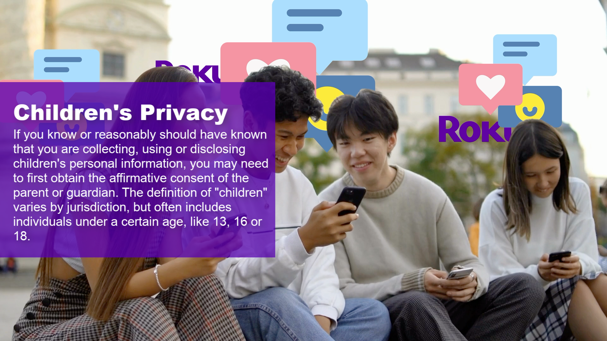
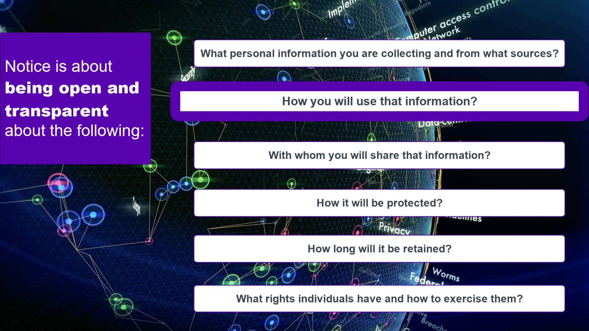
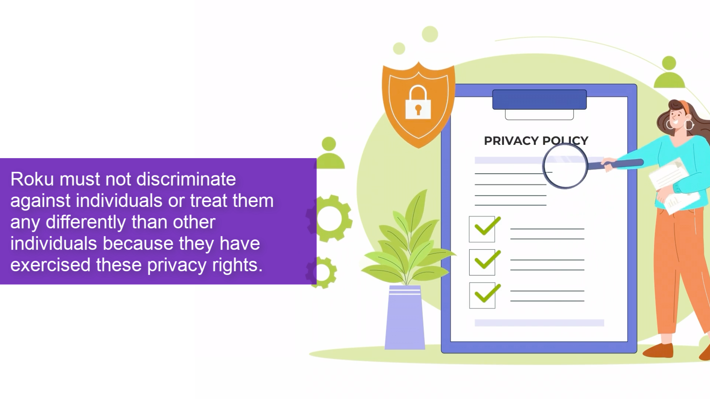
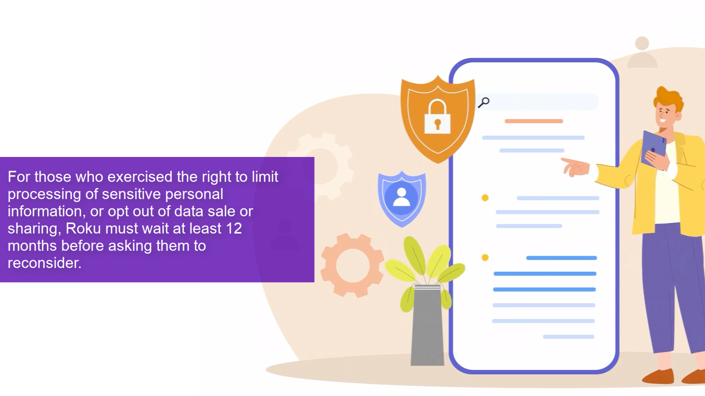
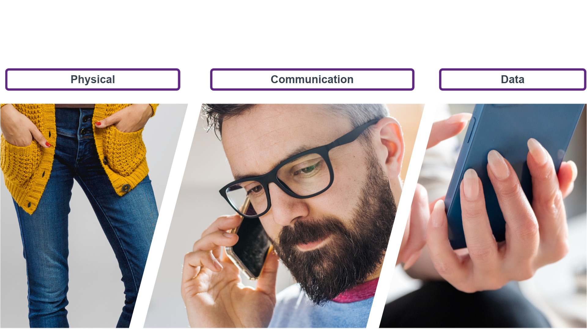
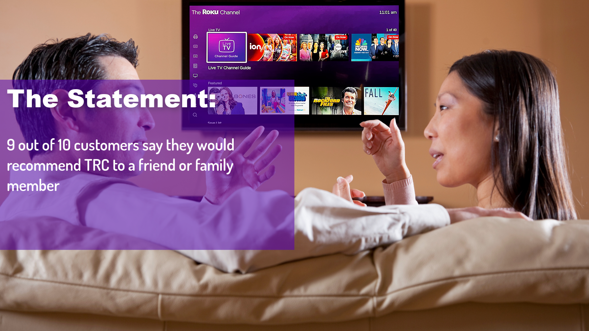
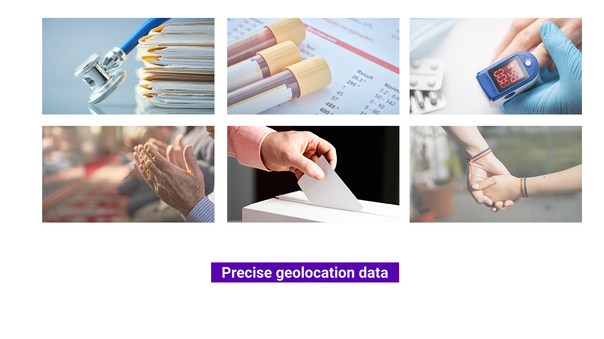
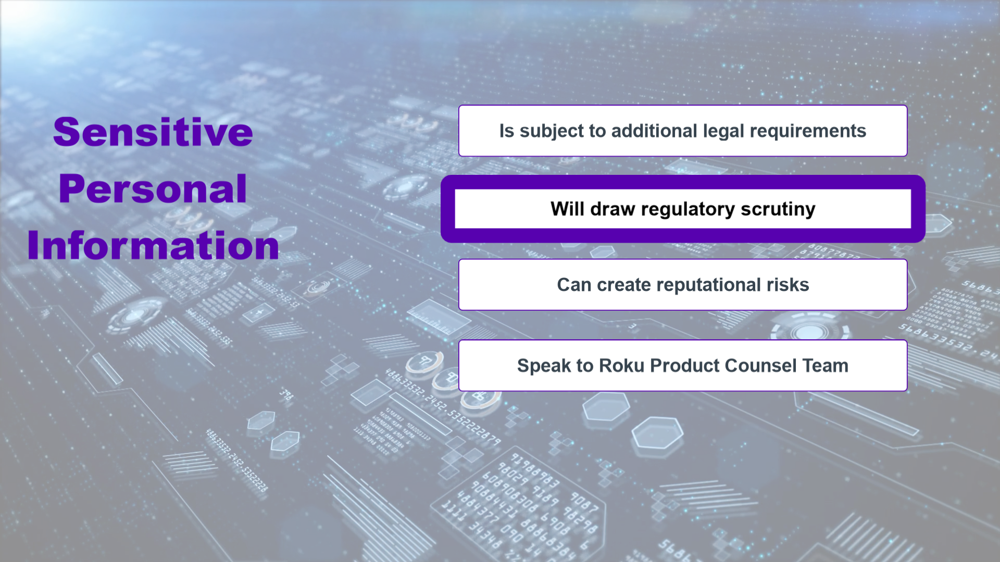
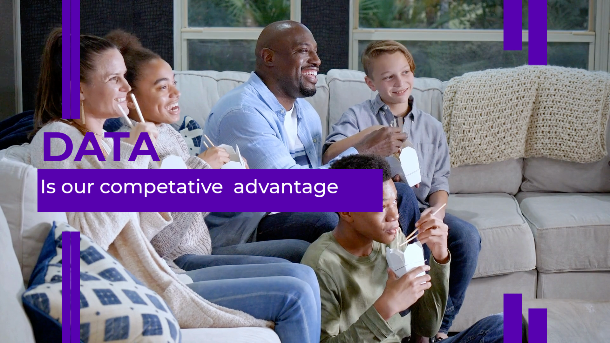

As Senior Learning Experience Designer at Roku, I partnered with privacy and legal subject matter experts to develop learning experiences that helped employees understand their role in protecting customer information and maintaining trust.
Rather than treating privacy as a compliance exercise, these learning experiences focused on helping employees recognize different categories of personal information, understand why responsible data handling matters, and apply sound judgment in real workplace situations. The work combined instructional strategy, visual communication, multimedia production, and interactive design to make complex regulatory concepts approachable and relevant.
The examples below represent a selection of the videos, graphics, and learning assets developed as part of Roku's broader privacy education and awareness program.









Related Case Study
Cybersecurity Behavior Change
Security training needed to move beyond passive awareness toward employee vigilance and reporting behavior.